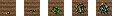
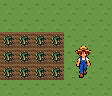
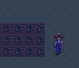
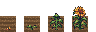
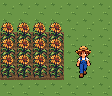
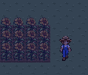
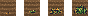
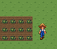

Approved for integration; runtime not integrated. See APPROVAL.json.
Contract / Checks / Review log
seed mound, height2-3pixels / two green leaves, height4-5pixels / small bushy plant, height7-8pixels / bush with2-3 hanging RED chilies, height10-12pixels / regrow: same bush with WHITE flowers and small GREEN pods, NO red chilies, height7-12pixels
dry: native1x / day4x / night4x

wet: native1x / day4x / night4x


seed mound, height2-3pixels / two leaves, height5-7pixels / stalk with broad leaves and closed GREEN bud, height14-18pixels / stalk2pixelswide, broad leaves and big YELLOW flowerhead9-12pixelswide with a brown seeddisc, tilted a little to viewer, height24-28pixels
dry: native1x / day4x / night4x

wet: native1x / day4x / night4x


seed mound, height2-3pixels / two broad leaves, height4-5pixels / spreading vine with leaves and one YELLOW flower, height6-7pixels / one striped GREEN WATERMELON10-13pixelswide lying on the vine, height8-11pixels
dry: native1x / day4x / night4x

wet: native1x / day4x / night4x

Native / light / dark / checker / grass. Compare shape and readability at1x.